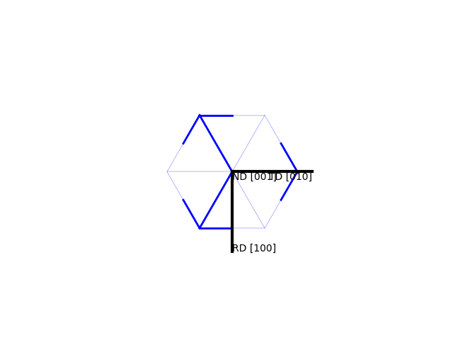
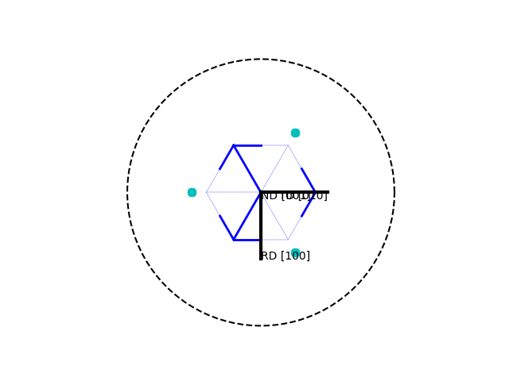
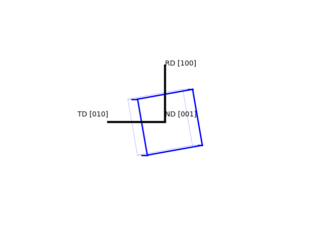
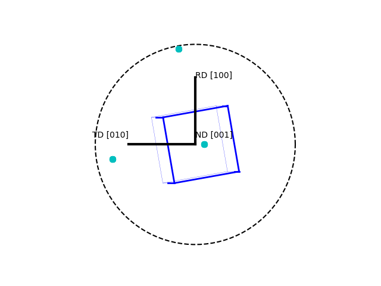
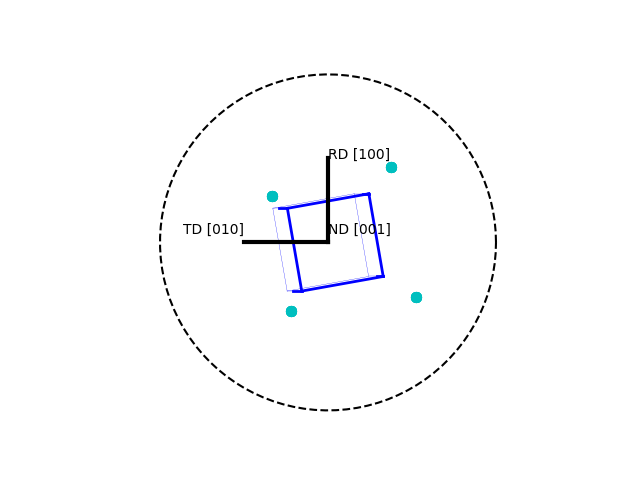

Detailed Description
Tutorials for ebsd_Orientation.
Overview
Orientation class: An orientation is combination of material symmetry (e.g. cubic) and specific rotation (e.g. rotated by 45 degrees)
Tutorials
Example: check colors of certain orientations. Answers are given in RGB scale.
Three examples are investigated:
- [100] = red: 1,0,0
- [110] = green: 0,1,0 (rotation by 45deg arount Phi)
- [111] = blue: 0,0,1 Each example creates an angle from 3 float values, creates an orientation and rounds the color to improve reabability.
>>> import numpy as np >>> from ebsd_Orientation import Orientation >>> angle = np.radians([0,0,0]) >>> o = Orientation(Eulers=angle, symmetry="cubic") >>> np.round(o.IPFcolor( [0,0,1] ),3) array([1., 0., 0.]) >>> angle = np.radians([0,45,0]) >>> o = Orientation(Eulers=angle, symmetry="cubic") >>> np.round(o.IPFcolor( [0,0,1] ),3) array([0., 1., 0.]) >>> angle = np.radians([0,55,45]) >>> o = Orientation(Eulers=angle, symmetry="cubic") >>> np.round(o.IPFcolor( [0,0,1] ),3) array([0. , 0.09, 1. ])
Example: [111] direction is difficult to ad-hoc define by angles. Use vectors to calculate
and verify

>>> import numpy as np
>>> hkl = np.array([1,1,1], dtype=np.float)
>>> uvw1 = np.array([1,-1,0], dtype=np.float)
>>> np.dot(hkl,uvw1)
0.0
>>> hkl /= np.linalg.norm(hkl)
>>> uvw1 /= np.linalg.norm(uvw1)
>>> uvw2 = np.cross(hkl,uvw1)
>>> rotM = np.vstack( (uvw1,uvw2,hkl) )
>>> rotM
array([[ 0.70710678, -0.70710678, 0. ],
[ 0.40824829, 0.40824829, -0.81649658],
[ 0.57735027, 0.57735027, 0.57735027]])
>>> o = Orientation(matrix=rotM, symmetry='cubic')
>>> o.plot()

>>> o.plot([1,0,0])

>>> o.asEulers(degrees=True) array([ 0. , 54.73561032, 45. ]) >>> np.round(o.IPFcolor( [0,0,1] ),3) #should be blue array([0., 0., 1.])
Compare to OIM Software
OIM software shows the 2D projection with the RD upward. Note, many textbooks have the RD downward. ND is always pointing out of the plane; TD changes depending on RD
>>> o = Orientation(Eulers=np.radians([0,10,10]), symmetry="cubic") >>> o.plot( )

>>> o.plot(plot2D='up-left')

>>> o.plot(poles=[1,0,0], plot2D='up-left', scale=1.5)

>>> o.plot(poles=[1,1,1])

>>> o.toScreen(equivalent=False) Euler angles: [ 0. 10. 10.] HKL [ 1 5 32] UVW [ 5 -1 0]
The HKL and UVW vectors are rounded to integer, hence rough values. They are convenient but not precise.
Example: loop through all equivalent directions and calculate the directions
>>> o = Orientation(Eulers=np.radians([0,45,0]), symmetry="cubic") >>> oHelp = Orientation(Eulers=np.array([0.,0.,0.]), symmetry="cubic") #find equivalent directions >>> for q in oHelp.symmetry.equivalentQuaternions(oHelp.quaternion): ... axis = q.conjugated()*np.array([1,0,0]) ... direction = o.inversePole( axis, SST=False)[0] ... print(axis, direction) [1. 0. 0.] [1. 0. 0.] [1. 0. 0.] [1. 0. 0.] [-1. 0. 0.] [-1. 0. 0.] [-1. 0. 0.] [-1. 0. 0.] [-1. 0. 0.] [-1. 0. 0.] [-1. 0. 0.] [-1. 0. 0.] [0. 0. 1.] [0. 0.70710678 0.70710678] [ 0. 0. -1.] [ 0. -0.70710678 -0.70710678] [ 0. -1. 0.] [ 0. -0.70710678 0.70710678] [0. 1. 0.] [ 0. 0.70710678 -0.70710678] [0. 0. 1.] [0. 0.70710678 0.70710678] [0. 1. 0.] [ 0. 0.70710678 -0.70710678] [ 0. 0. -1.] [ 0. -0.70710678 -0.70710678] [0. 0. 1.] [0. 0.70710678 0.70710678] [ 0. 0. -1.] [ 0. -0.70710678 -0.70710678] [ 0. -1. 0.] [ 0. -0.70710678 0.70710678] [0. 1. 0.] [ 0. 0.70710678 -0.70710678] [ 0. -1. 0.] [ 0. -0.70710678 0.70710678] [0. 1. 0.] [ 0. 0.70710678 -0.70710678] [ 0. -1. 0.] [ 0. -0.70710678 0.70710678] [ 0. 0. -1.] [ 0. -0.70710678 -0.70710678] [0. 0. 1.] [0. 0.70710678 0.70710678] [1. 0. 0.] [1. 0. 0.] [1. 0. 0.] [1. 0. 0.]
Example: calculate average orientation
>>> a = Orientation(Eulers=np.radians([0,45,0]), symmetry='cubic')
>>> b = Orientation(Eulers=np.radians([0,0,0]), symmetry='cubic')
>>> avg = Orientation.average([a,b,b]) #take orientation b twice
>>> print("Rotation angles",avg.asEulers(degrees=True))
Rotation angles [ 0. 14.6388066 0. ]Python source code documentation
ebsd_Orientation.Orientation material symmetry + rotation of a material point